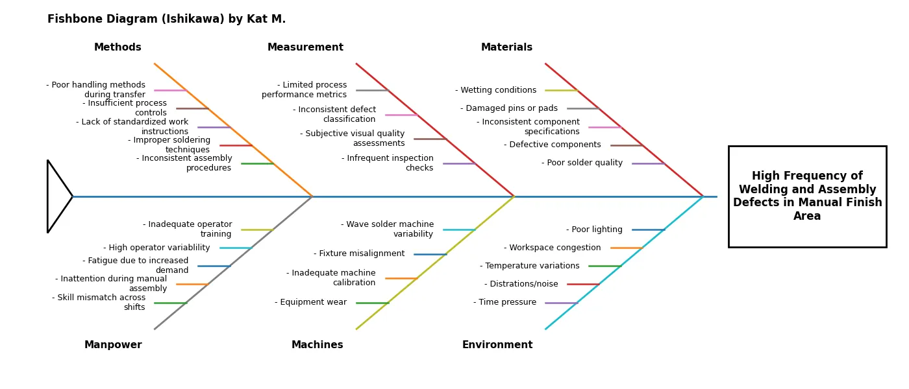
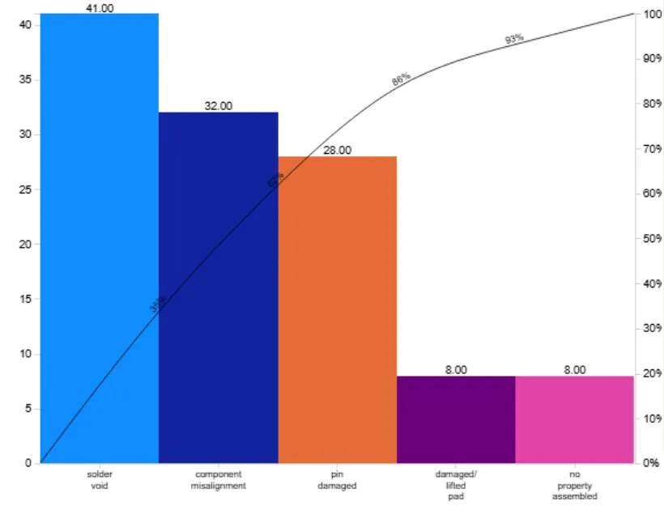

Back to Projects
Data Analytics · Statistics · Visualization
View Code on GitHub
Manufacturing Defect Analysis
A manufacturing facility was seeing persistently high defect counts with no clear answer for which production lines were responsible. This project used statistical testing and data visualization to turn a messy defect dataset into a targeted, defensible action plan.

Custom Python-generated Ishikawa diagram — six cause categories mapped to defect root causes in the Manual Finish Area

Solder void accounts for 36% of all defects — top 3 defect types cover 86% cumulatively
544
Total defects on Production Line 3 — highest of all lines by a significant margin
F=17.64
ANOVA result — production model type significantly drives defect variation (p < 0.001)
86%
Of all defects covered by just three defect types — solder void, component misalignment, and pin damage
Explore the full analysis
Jupyter notebook, Python source, Power BI dashboard, and dataset — all in the repo.